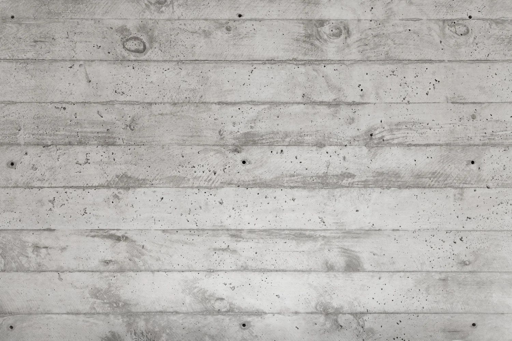

OUR EXPERIENCE

Master-Planning

Multi-Family & Mixed-Use

Retail & Restaurants

Aviation

Custom Single-Family

Office & Workplace

Preservation & Adaptive Re-Use

Passive House & High-Performance

Architecture that roots itself quietly in the neighborhood fabric. Denser than a house, more human than a tower — the vital middle ground that healthy cities are built upon.
CLIENT TESTIMONIALS
"Jeff has been my architect of choice on four projects now. He was instrumental in the design of the Creamery in Beaver, Utah (the first project) helping our team navigate the complexity of building a 12,000 square foot retail visitor center for the Creamery cheese brand. When we needed to expand the store footprint, Jeff was there to assist and design again. Currently working on two additional projects with him, Jeff listens and provides valuable solutions drawn from his broad experience. He has my highest recommendation."
- Marie
“I have worked with Knighton Architecture on multiple projects - most recently being Rodizio Grill locations in Denver, Fort Lauderdale, and Orlando. Jeff is professional, timely, and incredibly creative. He has been able to make our vision come to life in stunningly beautiful restaurants."
- Ashlee
“I have worked with Knighton Architecture for years and I'm always impressed with their designs and professionalism on all projects. As a general contractor, i fully understand that the choice of architect can make or break a project. I will gladly do any job with knighton architecture any time. some architects seam to not understand the construction process or they have unrealistic expectations. knighton is down to earth, easy to work with, and is a team player.”
- Jed
LOCATIONS & LICENSES

